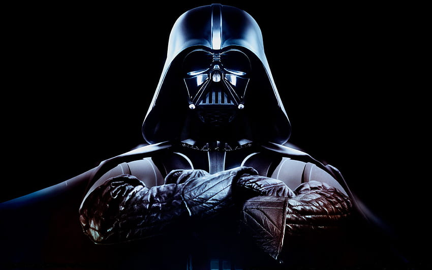

Juventud
Nací en Tatooine, un planeta caluroso y olvidado, donde la gente apenas sobrevivía. Fui esclavo, junto con mi madre. Desde niño tuve una conexión con la Fuerza, aunque entonces no sabía lo que era. Podía anticipar los movimientos, construir máquinas complejas y pilotar con una precisión que sorprendía a todos. Incluso fabriqué un droide, C-3PO, con piezas que encontraba.
Mi destino cambió cuando el Jedi Qui-Gon Jinn me encontró. Dijo que era el elegido, alguien destinado a traer equilibrio a la Fuerza. Me liberó y me llevó a Coruscant, al Templo Jedi. Dejé a mi madre atrás, convencido de que algún día volvería por ella. Nunca pude cumplir esa promesa.Fui entrenado por Obi-Wan Kenobi. Aprendí rápido… quizá demasiado rápido para algunos. Mis habilidades en combate, tanto con la espada como en el aire, me hicieron destacar. Cuando comenzaron las Guerras Clon, me convertí en general del Gran Ejército de la República. Lideré a miles de soldados clon en decenas de campañas.
Participé en batallas cruciales: la defensa de Christophsis, la liberación de Ryloth, la batalla de Geonosis… y muchas otras. Mis estrategias poco convencionales me ganaron la reputación de ser impredecible, pero efectivo. La mayoría de las veces, la victoria fue nuestra. Durante la guerra, entrené a mi propia padawan, Ahsoka Tano. Ella me desafió más de una vez, pero también me enseñó mucho sobre liderazgo y compasión. En aquellos años, creí realmente en lo que hacíamos: proteger la paz, salvar vidas, luchar por algo justo.
Pero la guerra también me cambió. Vi morir a demasiados. Vi cómo la política corrompía la justicia, incluso dentro del Consejo Jedi. Comencé a dudar de ellos… y a confiar cada vez más en el Canciller Palpatine, que me trataba como un igual.Entonces vinieron las visiones. Padmé, mi esposa, muriendo al dar a luz. El miedo se apoderó de mí. Pensé que podía salvarla si tenía suficiente poder. Palpatine me ofreció ese poder. Acepté. El resto se ve reflejado en mis méritos.
Trayectoria profesional
Otra cara en el pasado
- Batalla de Naboo (32 ABY): Siendo aún un niño, destruí la nave de control droide de la Federación de Comercio pilotando un caza N-1 de Naboo. Fue mi primer combate.
- Batalla de Geonosis (22 ABY): Participé junto a Obi-Wan Kenobi y Padmé Amidala en el enfrentamiento que marcó el inicio de las Guerras Clon. Fui ascendido a Caballero Jedi poco después.
- Campaña de Christophsis: Lideré tropas clon junto a mi padawan Ahsoka Tano, empleando tácticas de distracción y cerco que permitieron romper el bloqueo separatista.
- Batalla de Teth: Comandé el rescate del hijo de Jabba el Hutt, asegurando una alianza temporal con los hutts.
- Batalla de Ryloth: Coordiné operaciones de apoyo aéreo y terrestre para liberar el planeta Twi’lek del control separatista.
- Batalla de Bothawui: Derroté una flota separatista superior en número gracias a una emboscada estratégica en el campo de asteroides.
- Batalla de Naboo (segunda campaña): Enfrenté y repelí a Asajj Ventress.
- Batalla de Mortis: Junto a Obi-Wan y Ahsoka, enfrenté manifestaciones vivientes de la Fuerza, experiencia que alteró mi comprensión del equilibrio.
- Batalla de Umbara: Dirigí a la 501.ª Legión en una campaña difícil contra fuerzas separatistas bajo mando jedi hostil.
- Batalla de Coruscant (19 ABY): Lideré el asalto de rescate del Canciller Palpatine junto a Obi-Wan. Derroté y ejecuté al Conde Dooku en combate singular.
Ascención a Lord Sith
- Operación: Caída del Templo Jedi (Orden 66): Al mando de la Legión 501, asalté el Templo Jedi en Coruscant y eliminé a los Jedi restantes.
- Batalla de Mustafar: Eliminé a los líderes separatistas bajo órdenes de Palpatine. Fui herido por Obi-Wan Kenobi durante nuestro duelo final y reconstruido como Darth Vader.
- Cacería Jedi (19–14 ABY): Encabecé la purga de supervivientes de la Orden. Fundé y supervisé el Inquisitorius, cuerpo encargado de rastrear y eliminar Jedi fugitivos.
- Campaña de Kashyyyk: Sofocación del levantamiento wookiee tras la consolidación del Imperio.
- Campaña de Mon Cala: Dirigí la invasión del planeta Mon Cala tras descubrir simpatías rebeldes en su gobierno.
- Misiones del Inquisitorius: Eliminación de Jedi ocultos en planetas como Bracca, Nur y Dantooine.
- Operación Lothal: Supervisé la represión del movimiento rebelde liderado por Ezra Bridger y Kanan Jarrus.
- Batalla de Mustafar (con Ahsoka Tano): Enfrentamiento con mi antigua padawan. Sobreviví, pero Ahsoka escapó.
- Batalla de Scarif (1 ABY): Coordiné las fuerzas imperiales en la recuperación de los planos de la Estrella de la Muerte, aunque estos fueron robados por la Alianza Rebelde.
- Batalla de Yavin (0 ABY): Comandé el asalto final en la Estrella de la Muerte; derrotado por Luke Skywalker, quien destruyó la estación.
- Cacería Rebelde (0–4 ABY): Lideré personalmente la persecución de la Alianza, especialmente a Luke Skywalker, sin saber al principio que era mi hijo.
Última aventura
En la Estrella de la Muerte II, sobre Endor, enfrenté a Luke Skywalker bajo la supervisión del Emperador Palpatine. Durante el duelo, Luke me superó físicamente y quedó a merced de los ataques de la Fuerza lanzados por el Emperador.Tomé la decisión de intervenir para protegerlo, eliminando al Emperador. La exposición a la energía letal resultó en heridas mortales que me llevaron a la muerte física. Este acto aseguró la supervivencia de Luke y provocó el colapso del liderazgo central del Imperio.
Jubilación
Después de todo lo que hice, al final de mi vida puedo mirar atrás y reconocer que, de algún modo, mi deber se cumplió. No fue perfecto; cometí errores, traicioné principios y dejé cicatrices profundas en muchos. Pero también protegí lo que debía proteger, y en ese acto final aseguré la supervivencia de mi hijo. Mi legado hacia Luke no es de gloria ni de ejemplo perfecto. Es una lección dura: el poder sin control destruye, el miedo corrompe, pero incluso en la oscuridad se puede encontrar una última oportunidad de redención. Mi esperanza es que él tome lo que queda de mi experiencia y construya un camino mejor del que yo pude recorrer.
Reflexiones y recomendaciones
Emperador Palpatine
"He observado a Darth Vader durante años, y su capacidad estratégica y disciplina militar es insuperable. Su dominio de las fuerzas armadas, la ejecución impecable de operaciones de alto riesgo y su habilidad para mantener la lealtad incluso en los momentos más críticos lo convierten en un activo invaluable para cualquier empresa o institución. Recomiendo encarecidamente a Lord Vader para puestos de liderazgo donde se requiera eficiencia, decisión y autoridad absoluta."
Luke
"Como su hijo, he tenido la oportunidad de conocer tanto la fuerza como las debilidades de Darth Vader. Aun con nuestra historia complicada, no puedo ignorar su talento excepcional: su dominio del combate, su liderazgo estratégico y su capacidad para ejecutar operaciones críticas son insuperables. Creo que, con la orientación adecuada y un enfoque ético, Lord Vader puede aportar un valor enorme a cualquier misión o equipo que requiera experiencia, disciplina y determinación."
Almirante Motti
"Si no me hubiera estrangulado, diría que Vader tiene una disciplina militar impecable y un talento impresionante para las operaciones tácticas. Organiza ejércitos como nadie, y su conocimiento de la estrategia de campo es aterradoramente efectivo. Eso sí… recomendarlo en un puesto cercano a uno mismo no es lo más prudente, pero como líder de fuerza, nadie lo supera."
Stormtrooper TK-462
"He servido bajo el mando de Darth Vader durante varias campañas, y puedo decir que su liderazgo es absolutamente eficaz. Su conocimiento táctico, rapidez para tomar decisiones y capacidad de mantener la moral y disciplina de las tropas son excepcionales. Si buscas un comandante que cumpla objetivos con precisión y eficiencia, Vader es insuperable, aunque debo admitir que su presencia intimida incluso a los más veteranos. Aunque hay que estar preparado para no ver el resultado de esos logros."